Descriptors for Image Classification
To tell classes apart, a program needs numbers that describe what is in the image regardless of where: how intensities are distributed, what shapes the objects have, how big the structures are. These four bundles provide such position-free descriptors. Most also work inside a region of interest (ROI), so a program can describe "the cell" rather than "the slide", or compare a region with its surroundings.
| Getter | Bundles |
|---|---|
get_extension_descriptors_nb() | bundle_number_intensityStatsFromImg, bundle_number_shapeFromImg, bundle_number_objectStatsFromImg, bundle_number_granulometryFromImg |
Every operator returns a Float64, takes at most three inputs, and returns 0.0 for an empty selection. A ROI is a binary mask, or an intensity map thresholded at 0.5, so any MAGE mask (saliency, blobs, clean-up) can be one.
Example classes
Four synthetic cell classes, 64×64 (shown at 3×), each with a textured interior on a darker textured background. The masks are the images thresholded at 0.5.
Shared intensity statistics also accept RGB channel arrays and volumes. A matching 2D ROI selects all channels or depth slices; full-size ROIs select individual samples. RGB statistics pool channels rather than converting to luminance. Shape, object and granulometry descriptors on this page remain 2D; use the volume bundles for spatial 3D geometry. See Image-to-scalar inputs for dispatch and inference.
| round | elongated | lobed | vacuolated | |
|---|---|---|---|---|
| image | 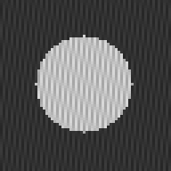 | 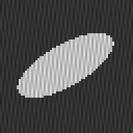 | ||
mask (≥ 0.5) | 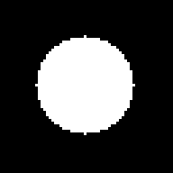 | 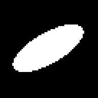 |
Intensity distribution — bundle_number_intensityStatsFromImg
| Statistic | Meaning |
|---|---|
stat_q05, stat_q25, stat_q50, stat_q75, stat_q95, stat_iqr | quantiles (as Statistics.quantile) and the interquartile range |
stat_mean, stat_std, stat_mad | mean, standard deviation, mean absolute deviation |
stat_skewness, stat_kurtosis | asymmetry and tail weight (excess kurtosis: 0 for a Gaussian) |
stat_entropy, stat_uniformity | spread of the 32-bin histogram: entropy over its maximum, sum of squared probabilities |
stat_bimodality | bimodality coefficient; above 5/9 ≈ 0.56 suggests two populations |
stat_otsu_threshold, stat_otsu_separability | Otsu's threshold, and how well it splits the pixels (between-class over total variance, 1 = two clean levels) |
stat_frac_above | fraction of pixels at or above a threshold (last argument, default 0.5) |
Each comes in four forms:
| Call | Pixels summarised |
|---|---|
stat_x(img) | the whole image |
stat_x(img, roi) | inside the region |
stat_x_out(img, roi) | outside the region |
stat_x_diff(img, roi) | inside value minus outside value |
The histograms below are of the round and the lobed cell (whole image). Grey bars: 64-bin histogram; blue lines: q25, q50, q75; red line: Otsu threshold.
| round | lobed |
|---|---|
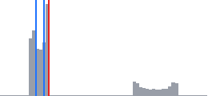 | 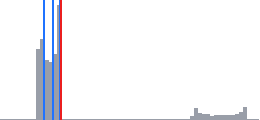 |
Whole-image statistics of the four classes:
Every statistic on the whole image of each class:
stats = (:q05, :q25, :q50, :q75, :q95, :iqr, :mean, :std, :mad, :skewness, :kurtosis, :entropy, :uniformity,
:bimodality, :otsu_threshold, :otsu_separability, :frac_above)
table([("stat_$(s)", [g_call(getfield(I, Symbol(:stat_, s)), images[k]) for k in kinds]) for s in stats], kinds) round elongated lobed vacuolated
stat_q05 0.149 0.149 0.149 0.149
stat_q25 0.169 0.169 0.165 0.169
stat_q50 0.208 0.204 0.2 0.212
stat_q75 0.231 0.227 0.227 0.651
stat_q95 0.831 0.824 0.898 0.831
stat_iqr 0.063 0.059 0.063 0.482
stat_mean 0.328 0.302 0.287 0.34
stat_std 0.245 0.228 0.237 0.252
stat_mad 0.208 0.179 0.166 0.22
stat_skewness 1.213 1.525 1.99 1.085
stat_kurtosis -0.369 0.518 2.156 -0.673
stat_entropy 0.602 0.577 0.54 0.614
stat_uniformity 0.157 0.173 0.194 0.15
stat_bimodality 0.939 0.945 0.962 0.936
stat_otsu_threshold 0.231 0.231 0.231 0.231
stat_otsu_separability 0.969 0.968 0.975 0.97
stat_frac_above 0.246 0.2 0.148 0.268stat_frac_above(img, t): the share of pixels at or above t. Sweeping t reads the image's brightness distribution from the top:
table([("stat_frac_above(img, $t)", [g_call(I.stat_frac_above, images[k], t) for k in kinds]) for t in (0.2, 0.5, 0.7, 0.8)], kinds) round elongated lobed vacuolated
stat_frac_above(img, 0.2) 0.575 0.548 0.518 0.588
stat_frac_above(img, 0.5) 0.246 0.2 0.148 0.268
stat_frac_above(img, 0.7) 0.164 0.134 0.148 0.18
stat_frac_above(img, 0.8) 0.084 0.068 0.099 0.09The ROI forms separate the cell from its background. Here the ROI is each image's own mask: inside, the texture of the cell; outside, the background; _diff, the contrast between them.
Every statistic in its three ROI forms, for the round cell (inside: the cell; outside: the background):
println(rpad("statistic", 26), rpad("stat_x(img, mask)", 20), rpad("stat_x_out(img, mask)", 24), "stat_x_diff(img, mask)")
for s in stats
vals = [g_call(getfield(I, Symbol(:stat_, s, suffix)), images[:round], masks[:round]) for suffix in ("", "_out", "_diff")]
println(rpad("stat_$(s)", 26), rpad(round(vals[1], digits = 3), 20), rpad(round(vals[2], digits = 3), 24), round(vals[3], digits = 3))
endstatistic stat_x(img, mask) stat_x_out(img, mask) stat_x_diff(img, mask)
stat_q05 0.651 0.149 0.502
stat_q25 0.678 0.161 0.518
stat_q50 0.749 0.188 0.561
stat_q75 0.824 0.22 0.604
stat_q95 0.847 0.231 0.616
stat_iqr 0.145 0.059 0.086
stat_mean 0.75 0.19 0.56
stat_std 0.071 0.028 0.042
stat_mad 0.064 0.026 0.038
stat_skewness 0.007 -0.003 0.01
stat_kurtosis -1.502 -1.483 -0.019
stat_entropy 0.592 0.392 0.2
stat_uniformity 0.133 0.263 -0.13
stat_bimodality 0.667 0.659 0.008
stat_otsu_threshold 0.749 0.188 0.561
stat_otsu_separability 0.811 0.808 0.002
stat_frac_above 1.0 0.0 1.0The same for three statistics across the four classes:
rows = []
for s in (:mean, :std, :entropy)
push!(rows, ("stat_$(s)(img, mask)", [g_call(getfield(I, Symbol(:stat_, s)), images[k], masks[k]) for k in kinds]))
push!(rows, ("stat_$(s)_out(img, mask)", [g_call(getfield(I, Symbol(:stat_, s, :_out)), images[k], masks[k]) for k in kinds]))
push!(rows, ("stat_$(s)_diff(img, mask)", [g_call(getfield(I, Symbol(:stat_, s, :_diff)), images[k], masks[k]) for k in kinds]))
end
table(rows, kinds) round elongated lobed vacuolated
stat_mean(img, mask) 0.75 0.75 0.85 0.75
stat_mean_out(img, mask) 0.19 0.19 0.19 0.19
stat_mean_diff(img, mask) 0.56 0.56 0.66 0.56
stat_std(img, mask) 0.071 0.071 0.071 0.07
stat_std_out(img, mask) 0.028 0.028 0.028 0.028
stat_std_diff(img, mask) 0.042 0.042 0.043 0.042
stat_entropy(img, mask) 0.592 0.592 0.577 0.594
stat_entropy_out(img, mask) 0.392 0.392 0.392 0.392
stat_entropy_diff(img, mask) 0.2 0.2 0.185 0.201Shape — bundle_number_shapeFromImg
Descriptors of the whole foreground, treated as one shape:
| Operator | Meaning |
|---|---|
shape_hu1 … shape_hu7 | Hu's moment invariants, as −sign(h) log10(abs(h)): unchanged by translation, rotation and scale; hu7 changes sign under mirroring |
shape_hu1_weighted … shape_hu7_weighted | the same on the intensity image (weights divided by their maximum, so contrast does not matter); (img, roi) restricts to a region |
shape_solidity | area over the pixel area of the convex hull: 1 for convex shapes, low for lobed ones |
shape_circularity, shape_elongation, shape_extent | moment circularity, 1 − sqrt(λmin / λmax), area over bounding-box area |
shape_fill, shape_hole_fraction, shape_euler | area over image area, holes over filled area, objects minus holes |
Inputs: (mask), (img) at 0.5, (img, threshold); (mask, roi) keeps only the foreground inside the region.
Every shape operator on the four masks, then the intensity-weighted Hu moments on the four images:
ops = (:solidity, :circularity, :elongation, :extent, :fill, :hole_fraction, :euler,
:hu1, :hu2, :hu3, :hu4, :hu5, :hu6, :hu7)
table([("shape_$(s)", [g_call(getfield(Sh, Symbol(:shape_, s)), masks[k]) for k in kinds]) for s in ops], kinds) round elongated lobed vacuolated
shape_solidity 1.0 1.0 0.624 0.874
shape_circularity 0.999 0.672 0.688 0.81
shape_elongation 0.0 0.613 0.013 0.034
shape_extent 0.737 0.562 0.419 0.653
shape_fill 0.246 0.2 0.148 0.268
shape_hole_fraction 0.0 0.0 0.0 0.126
shape_euler 1.0 1.0 1.0 -2.0
shape_hu1 0.798 0.626 0.636 0.707
shape_hu2 0.0 1.513 5.011 4.331
shape_hu3 0.0 0.0 5.287 6.045
shape_hu4 0.0 0.0 6.01 5.05
shape_hu5 0.0 0.0 -11.658 10.901
shape_hu6 0.0 0.0 -8.515 -7.412
shape_hu7 0.0 0.0 0.0 10.659table([("shape_hu$(k)_weighted", [g_call(getfield(Sh, Symbol(:shape_hu, k, :_weighted)), images[k2]) for k2 in kinds]) for k in 1:7], kinds) round elongated lobed vacuolated
shape_hu1_weighted 0.533 0.462 0.396 0.536
shape_hu2_weighted 9.054 2.872 6.613 5.409
shape_hu3_weighted 8.161 5.721 6.775 7.027
shape_hu4_weighted 5.084 4.964 4.791 5.225
shape_hu5_weighted 12.066 10.347 10.847 -11.491
shape_hu6_weighted 11.022 -6.441 -8.886 -8.867
shape_hu7_weighted 11.753 10.686 10.647 -11.514On an intensity image, (img, t) thresholds at t before measuring. The lobed cell's mask grows as t drops and swallows the background:
table([("shape_$(s)(img, $t)", [g_call(getfield(Sh, Symbol(:shape_, s)), images[:lobed], t)]) for s in (:fill, :solidity) for t in (0.2, 0.5, 0.8)], (:lobed,)) lobed
shape_fill(img, 0.2) 0.518
shape_fill(img, 0.5) 0.148
shape_fill(img, 0.8) 0.099
shape_solidity(img, 0.2) 0.52
shape_solidity(img, 0.5) 0.624
shape_solidity(img, 0.8) 0.432The lobed cell has the lowest solidity, the elongated one the highest elongation, and only the vacuolated cell has holes (Euler number 1 − 3 = −2).
Invariance of the Hu moments
The same shape moved, rotated by 90°, scaled ×2 and mirrored. The first six invariants stay (almost) equal — scaling only changes them through pixelisation — while hu7 flips sign for the mirror image.
| original | moved | rotated 90° | mirrored | scaled ×2 |
|---|---|---|---|---|
 |
table([("shape_hu$(k)", [g_call(getfield(Sh, Symbol(:shape_hu, k)), g_binary(m)) for (_, m) in variants]) for k in 1:7],
first.(variants)) original moved rotated 90° mirrored scaled ×2
shape_hu1 0.664 0.664 0.664 0.664 0.663
shape_hu2 1.79 1.79 1.79 1.79 1.79
shape_hu3 2.848 2.848 2.848 2.848 2.848
shape_hu4 3.974 3.974 3.974 3.974 3.974
shape_hu5 -7.4 -7.4 -7.4 -7.4 -7.4
shape_hu6 -4.923 -4.923 -4.923 -4.923 -4.923
shape_hu7 7.971 7.971 7.971 -7.971 7.971Aggregates over objects — bundle_number_objectStatsFromImg
When a mask holds many objects (cells in a field, grains, letters), the distribution of their properties often separates classes better than any single object. objs_<descriptor>_<aggregate> computes a descriptor for every 8-connected object and aggregates it.
| Descriptors | Aggregates |
|---|---|
area (fraction of the image), circularity, elongation, extent, solidity, nn_distance (distance to the nearest other centroid) | mean, std, min, max, median, cv (std / mean) |
Plus objs_area_gini (inequality of sizes: 0 all equal) and objs_intensity_<aggregate>(img, mask) (each object's mean intensity, aggregated). (mask, roi) keeps the objects whose centroid lies inside the region.
| uniform | mixed |
|---|---|
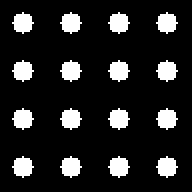 | 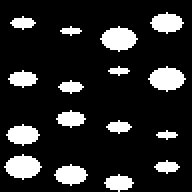 |
Every aggregate on the two fields:
O = UTCGP.number_shapeFromImg
rows = [(String(w.name), [g_call(w.fn, g_binary(m)) for (_, m) in fields])
for w in bundle_number_objectStatsFromImg if !startswith(String(w.name), "objs_intensity")]
push!(rows, ("objs_area_mean(mask, top)", [g_call(O.objs_area_mean, g_binary(m), top_half) for (_, m) in fields]))
table(rows, first.(fields)) uniform mixed
objs_area_mean 0.009 0.01
objs_area_std 0.0 0.005
objs_area_min 0.009 0.003
objs_area_max 0.009 0.018
objs_area_median 0.009 0.009
objs_area_cv 0.0 0.52
objs_circularity_mean 0.98 0.785
objs_circularity_std 0.0 0.111
objs_circularity_min 0.98 0.586
objs_circularity_max 0.98 0.909
objs_circularity_median 0.98 0.821
objs_circularity_cv 0.0 0.142
objs_elongation_mean 0.0 0.48
objs_elongation_std 0.0 0.103
objs_elongation_min 0.0 0.347
objs_elongation_max 0.0 0.649
objs_elongation_median 0.0 0.46
objs_elongation_cv 0.0 0.215
objs_extent_mean 0.669 0.625
objs_extent_std 0.0 0.036
objs_extent_min 0.669 0.564
objs_extent_max 0.669 0.66
objs_extent_median 0.669 0.644
objs_extent_cv 0.0 0.058
objs_solidity_mean 1.0 1.0
objs_solidity_std 0.0 0.0
objs_solidity_min 1.0 1.0
objs_solidity_max 1.0 1.0
objs_solidity_median 1.0 1.0
objs_solidity_cv 0.0 0.0
objs_nn_distance_mean 0.179 0.151
objs_nn_distance_std 0.0 0.031
objs_nn_distance_min 0.179 0.119
objs_nn_distance_max 0.179 0.188
objs_nn_distance_median 0.179 0.15
objs_nn_distance_cv 0.0 0.209
objs_area_gini 0.0 0.291
objs_area_mean(mask, top) 0.009 0.01objs_intensity_<a>(img, mask) aggregates each object's mean intensity. On the four cell images, each with its own mask:
table([("objs_intensity_$(a)", [g_call(getfield(O, Symbol(:objs_intensity_, a)), images[k], masks[k]) for k in kinds])
for a in (:mean, :std, :min, :max, :median, :cv)], kinds) round elongated lobed vacuolated
objs_intensity_mean 0.75 0.75 0.85 0.75
objs_intensity_std 0.0 0.0 0.0 0.0
objs_intensity_min 0.75 0.75 0.85 0.75
objs_intensity_max 0.75 0.75 0.85 0.75
objs_intensity_median 0.75 0.75 0.85 0.75
objs_intensity_cv 0.0 0.0 0.0 0.0Size distribution — bundle_number_granulometryFromImg
An opening of radius r removes every structure narrower than a disk of that radius and keeps the rest unchanged. The fraction that survives, as r grows, is the size distribution of the structures: it drops where most of the grains have their size.
| Operator | Meaning |
|---|---|
gran_open_r<k>(mask), k ∈ {1, 2, 3, 4, 6, 8} | fraction of the foreground surviving an exact Euclidean disk opening of radius k |
gran_open(mask, r) | the same with the radius as a scalar: 1 + round(15 r) pixels |
gran_open_bg_r<k>(mask) | fraction of the background surviving: low when the background is made of narrow gaps |
gran_thickness_mean, gran_thickness_max | mean and largest distance to the background, over half the shorter side |
gran_grey_open_r<k>(img[, roi]) | share of the total intensity surviving a grey opening by a (2k+1)² square: bright structures at least that wide |
gran_grey_close_r<k>(img[, roi]) | share of the total darkness surviving a grey closing: dark structures at least that wide |
Two grain masks: fine grains (radius 1–3) and coarse grains (radius 5–8).
| fine | coarse | |
|---|---|---|
| mask | 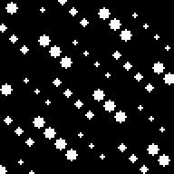 | |
| after an opening of radius 2 | 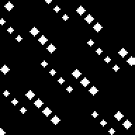 | |
| after an opening of radius 4 |
Surviving fraction against the radius (horizontal 0–9, vertical 0–1, grid every 0.5): red fine grains, blue coarse grains. The fine curve collapses at radius 4; the coarse one holds until radius 6–8.
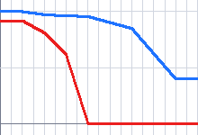
Every binary granulometry operator on the two grain masks:
table(vcat([("gran_open_r$(r)", [g_call(getfield(G, Symbol(:gran_open_r, r)), g_binary(m)) for m in (fine, coarse)]) for r in radii],
[("gran_open_bg_r$(r)", [g_call(getfield(G, Symbol(:gran_open_bg_r, r)), g_binary(m)) for m in (fine, coarse)]) for r in radii],
[("gran_thickness_mean", [g_call(G.gran_thickness_mean, g_binary(m)) for m in (fine, coarse)]),
("gran_thickness_max", [g_call(G.gran_thickness_max, g_binary(m)) for m in (fine, coarse)])]),
("fine", "coarse")) fine coarse
gran_open_r1 0.918 1.0
gran_open_r2 0.81 0.972
gran_open_r3 0.614 0.962
gran_open_r4 0.0 0.956
gran_open_r6 0.0 0.849
gran_open_r8 0.0 0.398
gran_open_bg_r1 1.0 1.0
gran_open_bg_r2 0.993 0.996
gran_open_bg_r3 0.981 0.989
gran_open_bg_r4 0.957 0.986
gran_open_bg_r6 0.84 0.944
gran_open_bg_r8 0.735 0.743
gran_thickness_mean 0.028 0.058
gran_thickness_max 0.066 0.212gran_open(mask, r) takes the radius as a number instead: 1 + round(15 r) pixels, so r = 0 is radius 1 and r = 1 radius 16.
The surviving fraction usually falls as the radius grows, but not strictly: digital disks of neighbouring radii are not nested pixel for pixel. Here every coarse grain was drawn as a digital disk of radius 5 to 8, so a radius-5 disk fits each grain exactly (1.0), while the radius-4 disk's outline trims a few edge pixels (0.956). A brute-force opening gives the same values.
table([("gran_open(mask, $r) [radius $(1 + round(Int, 15r))]", [g_call(G.gran_open, g_binary(m), r) for m in (fine, coarse)])
for r in (0.0, 0.1, 0.2, 0.3, 0.5)], ("fine", "coarse")) fine coarse
gran_open(mask, 0.0) [radius 1] 0.918 1.0
gran_open(mask, 0.1) [radius 3] 0.614 0.962
gran_open(mask, 0.2) [radius 4] 0.0 0.956
gran_open(mask, 0.3) [radius 5] 0.0 1.0
gran_open(mask, 0.5) [radius 9] 0.0 0.053The grey versions work on intensity images directly, without a mask: the share of intensity surviving grey openings separates a fine texture (red) from a coarse one (blue).
| fine texture | coarse texture | surviving intensity against the radius |
|---|---|---|
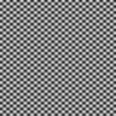 | 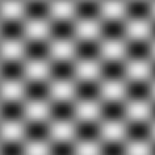 | 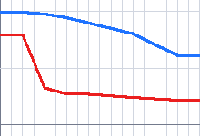 |
Every grey operator on the two textures (gran_grey_close_r<k> measures the dark structures the same way):
table(vcat([("gran_grey_open_r$(r)", [g_call(getfield(G, Symbol(:gran_grey_open_r, r)), t) for t in (fine_texture, coarse_texture)]) for r in radii],
[("gran_grey_close_r$(r)", [g_call(getfield(G, Symbol(:gran_grey_close_r, r)), t) for t in (fine_texture, coarse_texture)]) for r in radii]),
("fine texture", "coarse texture")) fine texture coarse texture
gran_grey_open_r1 0.796 0.996
gran_grey_open_r2 0.323 0.979
gran_grey_open_r3 0.269 0.946
gran_grey_open_r4 0.267 0.899
gran_grey_open_r6 0.238 0.804
gran_grey_open_r8 0.214 0.611
gran_grey_close_r1 0.796 0.995
gran_grey_close_r2 0.322 0.979
gran_grey_close_r3 0.269 0.946
gran_grey_close_r4 0.267 0.898
gran_grey_close_r6 0.238 0.805
gran_grey_close_r8 0.214 0.61Bundles
UTCGP.number_intensityStatsFromImg — Module
Intensity-distribution statistics of an image, over the whole image, inside a region of interest, outside it, or as the inside − outside difference.
Bundles
The exhaustive, always-current list of operators in each bundle is on the Bundle Catalogue page.
How this file is organised
- A selection (
_All,_Inside,_Outside) says which pixels count. _summarywalks the selected pixels once and gathers everything the statistics need (count, mean, central moments, histogram, values) in a_Summary.- Each statistic is a small function of the summary (
_std,_quantile,_entropy, …), listed in_STATISTICS. - The registration loop turns each statistic into three operators:
stat_<name>,stat_<name>_out,stat_<name>_diff.
Example
using UTCGP, ImageCore
img = SImageND(IntensityPixel{N0f8}.([0.2 0.2; 0.8 0.8]))
roi = SImageND(BinaryPixel.([false false; true true])) # bottom row
S = UTCGP.number_intensityStatsFromImg
S.stat_mean(img) # 0.5: the whole image
S.stat_mean(img, roi) # 0.8: inside the region
S.stat_mean_out(img, roi) # 0.2: outside it
S.stat_mean_diff(img, roi) # 0.6: the region is 0.6 brighter than its surroundings
S.stat_frac_above(img) # 0.5: half the pixels are ≥ 0.5UTCGP.number_intensityStatsFromImg.bundle_number_intensityStatsFromImg — Constant
bundle_number_intensityStatsFromImgPosition-free statistics of pixel intensities (first-order radiomics): quantiles stat_q05, stat_q25, stat_q50, stat_q75, stat_q95, stat_iqr, stat_mean, stat_std, stat_mad (mean absolute deviation), stat_skewness, stat_kurtosis (excess), stat_entropy and stat_uniformity (32-bin histogram), stat_bimodality (bimodality coefficient), stat_otsu_threshold, stat_otsu_separability (between-class over total variance at the Otsu threshold) and stat_frac_above.
Each statistic comes in three forms:
stat_x(img)over the whole image, orstat_x(img, roi)over the pixels inside a region of interest;stat_x_out(img, roi)over the pixels outside it;stat_x_diff(img, roi): inside minus outside, e.g. how much brighter or more textured an object is than its surroundings.
All statistics work on 2D images, 3D volumes and RGB arrays (H×W×3). RGB statistics pool channel samples; they are not luminance statistics. roi is binary, or an intensity map thresholded at 0.5, and shares the source's height and width:
- 2D ROI on a 2D source, or on a 3D source (RGB or volume): the ROI pixel selects that position in every channel / depth slice;
- 3D ROI on a 3D source of the same size: each channel sample / voxel is selected by its own ROI value.
These rules are the method signatures (shared size parameters), so there is no ROI method for any other pairing. In particular a 2D source facing a 3D image has no ROI method: MAGE's decoder then selects stat_x(img, args...) and the node is a one-input whole-image statistic. stat_frac_above takes the threshold as its last argument (default 0.5). An empty selection gives 0.0.
UTCGP.number_shapeFromImg — Module
Shape descriptors for classification: Hu moment invariants and descriptors of the whole foreground, and statistics aggregated over all objects of a mask.
Bundles
The exhaustive, always-current list of operators in each bundle is on the Bundle Catalogue page.
How this file is organised
Each descriptor is a kernel compute(fg, roi) -> Float64 on the foreground Bool matrix (roi is a region's pixel array or nothing). The macro @_mask_methods writes the public methods, and the loops at the end register one operator per kernel (whole-foreground descriptors and Hu moments) or per (descriptor, aggregate) pair (objs_*).
Example
using UTCGP, ImageCore
m = falses(30, 30)
m[5:9, 5:9] .= true # a 5 × 5 square (25 pixels)
m[15:24, 20:22] .= true # a 10 × 3 bar (30 pixels)
mask = SImageND(BinaryPixel.(m))
S = UTCGP.number_shapeFromImg
S.shape_fill(mask) # 55 / 900 ≈ 0.061
S.shape_euler(mask) # 2.0: two objects, no hole
S.objs_area_max(mask) # 30 / 900 ≈ 0.033: the bar
S.objs_extent_mean(mask) # 1.0: both fill their bounding box
S.objs_elongation_max(mask) # ≈ 0.70: the bar (the square scores 0)UTCGP.number_shapeFromImg.bundle_number_shapeFromImg — Constant
bundle_number_shapeFromImgDescriptors of the whole foreground of a mask, treated as one shape, and Hu moment invariants.
shape_hu1…shape_hu7: Hu's seven moment invariants of the foreground, unchanged by translation, rotation and scale (hu7changes sign under mirroring). Returned as−sign(h) log10 |h|, the usual scale.shape_hu1_weighted…shape_hu7_weighted: the same on the intensity image, pixels weighted by their value divided by the maximum (so contrast does not matter);(img, roi)restricts it to a region.shape_solidity(area / convex-hull area),shape_circularity,shape_elongation,shape_extent,shape_fill(area / image),shape_hole_fraction(holes / filled area) andshape_euler(objects − holes).
Mask inputs: (mask), (img) thresholded at 0.5, (img, threshold); with (mask, roi) only the foreground inside roi counts.
UTCGP.number_shapeFromImg.bundle_number_objectStatsFromImg — Constant
bundle_number_objectStatsFromImgPer-object descriptors aggregated over all objects of a mask: objs_<descriptor>_<aggregate> with descriptors area (fraction of the image), circularity, elongation, extent, solidity and nn_distance (normalised distance to the nearest other centroid), and aggregates mean, std, min, max, median and cv (std / mean). Also objs_area_gini (inequality of object sizes) and objs_intensity_<aggregate>(img, mask), the mean intensity of each object aggregated the same way.
Inputs: (mask), (img) at 0.5, (img, threshold); (mask, roi) keeps the objects whose centroid lies inside roi. No objects → 0.0.
UTCGP.number_granulometryFromImg — Module
Granulometry: the size distribution of structures, from morphological openings at increasing radii.
Bundles
The exhaustive, always-current list of operators in each bundle is on the Bundle Catalogue page.
UTCGP.number_granulometryFromImg.bundle_number_granulometryFromImg — Constant
bundle_number_granulometryFromImgHow big are the structures? An opening of radius r removes everything narrower than a disk (or square) of that radius and keeps the rest; the fraction that survives, as r grows, is the size distribution.
Binary masks (Euclidean disks, exact):
gran_open_r<k>(mask),k ∈ {1, 2, 3, 4, 6, 8}: fraction of the foreground surviving an opening of radiusk.gran_open(mask, r)takes the radius as a scalar (1 + round(15 r)pixels).gran_open_bg_r<k>(mask): the same for the background, so small gaps and holes show as a drop.gran_thickness_mean,gran_thickness_max: mean and maximum distance from foreground pixels to the background, over half the shorter image side.
Intensity images (square windows of side 2k + 1):
gran_grey_open_r<k>(img): share of the total intensity that survives a grey opening, i.e. bright structures at least that wide.gran_grey_close_r<k>(img): share of the total darkness (1 − v) that survives a grey closing, i.e. dark structures at least that wide.(img, roi)measures the shares only inside a region of interest.
Mask inputs: (mask), (img) thresholded at 0.5, (img, threshold). The image border is not treated as background. Empty inputs → 0.0.
Timings for the examples
Measured during this documentation build. See Timing methodology for measurement limits and input cases that can make operators expensive.
Julia 1.13.2; znver5; 1 Julia thread(s); optimisation level 2.
Times are warmed wall-clock measurements of the actual calls above, including invokelatest and allocations. Loading, factory generation and image rendering are excluded. CPU load and garbage collection affect these values. The maximum is the slowest observed sample, not a worst-case bound.
| Input | Dimensions | Pixel storage |
|---|---|---|
| round #1 | 64×64 | IntensityPixel{FixedPointNumbers.N0f8} |
| lobed #2 | 64×64 | IntensityPixel{FixedPointNumbers.N0f8} |
| elongated #3 | 64×64 | IntensityPixel{FixedPointNumbers.N0f8} |
| vacuolated #4 | 64×64 | IntensityPixel{FixedPointNumbers.N0f8} |
| round mask #5 | 64×64 | BinaryPixel{Bool} |
| elongated mask #6 | 64×64 | BinaryPixel{Bool} |
| lobed mask #7 | 64×64 | BinaryPixel{Bool} |
| vacuolated mask #8 | 64×64 | BinaryPixel{Bool} |
| image #9 | 64×64 | BinaryPixel{Bool} |
| image #10 | 64×64 | BinaryPixel{Bool} |
| image #11 | 64×64 | BinaryPixel{Bool} |
| image #12 | 64×64 | BinaryPixel{Bool} |
| image #13 | 128×128 | BinaryPixel{Bool} |
| image #14 | 64×64 | BinaryPixel{Bool} |
| image #15 | 64×64 | BinaryPixel{Bool} |
| image #16 | 64×64 | BinaryPixel{Bool} |
| image #17 | 64×64 | BinaryPixel{Bool} |
| image #18 | 128×128 | BinaryPixel{Bool} |
| image #19 | 64×64 | BinaryPixel{Bool} |
| image #20 | 64×64 | BinaryPixel{Bool} |
| image #21 | 64×64 | BinaryPixel{Bool} |
| image #22 | 64×64 | BinaryPixel{Bool} |
| image #23 | 128×128 | BinaryPixel{Bool} |
| image #24 | 64×64 | BinaryPixel{Bool} |
| image #25 | 64×64 | BinaryPixel{Bool} |
| image #26 | 64×64 | BinaryPixel{Bool} |
| image #27 | 64×64 | BinaryPixel{Bool} |
| image #28 | 128×128 | BinaryPixel{Bool} |
| image #29 | 64×64 | BinaryPixel{Bool} |
| image #30 | 64×64 | BinaryPixel{Bool} |
| image #31 | 64×64 | BinaryPixel{Bool} |
| image #32 | 64×64 | BinaryPixel{Bool} |
| image #33 | 128×128 | BinaryPixel{Bool} |
| image #34 | 64×64 | BinaryPixel{Bool} |
| image #35 | 64×64 | BinaryPixel{Bool} |
| image #36 | 64×64 | BinaryPixel{Bool} |
| image #37 | 64×64 | BinaryPixel{Bool} |
| image #38 | 128×128 | BinaryPixel{Bool} |
| image #39 | 64×64 | BinaryPixel{Bool} |
| image #40 | 64×64 | BinaryPixel{Bool} |
| image #41 | 64×64 | BinaryPixel{Bool} |
| image #42 | 64×64 | BinaryPixel{Bool} |
| image #43 | 128×128 | BinaryPixel{Bool} |
| image #44 | 96×96 | BinaryPixel{Bool} |
| image #45 | 96×96 | BinaryPixel{Bool} |
| image #46 | 96×96 | BinaryPixel{Bool} |
| image #47 | 96×96 | BinaryPixel{Bool} |
| image #48 | 96×96 | BinaryPixel{Bool} |
| image #49 | 96×96 | BinaryPixel{Bool} |
| image #50 | 96×96 | BinaryPixel{Bool} |
| image #51 | 96×96 | BinaryPixel{Bool} |
| image #52 | 96×96 | BinaryPixel{Bool} |
| image #53 | 96×96 | BinaryPixel{Bool} |
| image #54 | 96×96 | BinaryPixel{Bool} |
| image #55 | 96×96 | BinaryPixel{Bool} |
| image #56 | 96×96 | BinaryPixel{Bool} |
| image #57 | 96×96 | BinaryPixel{Bool} |
| image #58 | 96×96 | BinaryPixel{Bool} |
| image #59 | 96×96 | BinaryPixel{Bool} |
| image #60 | 96×96 | BinaryPixel{Bool} |
| image #61 | 96×96 | BinaryPixel{Bool} |
| image #62 | 96×96 | BinaryPixel{Bool} |
| image #63 | 96×96 | BinaryPixel{Bool} |
| image #64 | 96×96 | BinaryPixel{Bool} |
| image #65 | 96×96 | BinaryPixel{Bool} |
| image #66 | 96×96 | BinaryPixel{Bool} |
| image #67 | 96×96 | BinaryPixel{Bool} |
| image #68 | 96×96 | BinaryPixel{Bool} |
| image #69 | 96×96 | BinaryPixel{Bool} |
| image #70 | 96×96 | BinaryPixel{Bool} |
| image #71 | 96×96 | BinaryPixel{Bool} |
| image #72 | 96×96 | BinaryPixel{Bool} |
| image #73 | 96×96 | BinaryPixel{Bool} |
| image #74 | 96×96 | BinaryPixel{Bool} |
| image #75 | 96×96 | BinaryPixel{Bool} |
| image #76 | 96×96 | BinaryPixel{Bool} |
| image #77 | 96×96 | BinaryPixel{Bool} |
| image #78 | 96×96 | BinaryPixel{Bool} |
| image #79 | 96×96 | BinaryPixel{Bool} |
| image #80 | 96×96 | BinaryPixel{Bool} |
| image #81 | 96×96 | BinaryPixel{Bool} |
| image #82 | 96×96 | BinaryPixel{Bool} |
| image #83 | 96×96 | BinaryPixel{Bool} |
| image #84 | 96×96 | BinaryPixel{Bool} |
| image #85 | 96×96 | BinaryPixel{Bool} |
| image #86 | 96×96 | BinaryPixel{Bool} |
| image #87 | 96×96 | BinaryPixel{Bool} |
| image #88 | 96×96 | BinaryPixel{Bool} |
| image #89 | 96×96 | BinaryPixel{Bool} |
| image #90 | 96×96 | BinaryPixel{Bool} |
| image #91 | 96×96 | BinaryPixel{Bool} |
| image #92 | 96×96 | BinaryPixel{Bool} |
| image #93 | 96×96 | BinaryPixel{Bool} |
| image #94 | 96×96 | BinaryPixel{Bool} |
| image #95 | 96×96 | BinaryPixel{Bool} |
| image #96 | 96×96 | BinaryPixel{Bool} |
| image #97 | 96×96 | BinaryPixel{Bool} |
| image #98 | 96×96 | BinaryPixel{Bool} |
| image #99 | 96×96 | BinaryPixel{Bool} |
| image #100 | 96×96 | BinaryPixel{Bool} |
| image #101 | 96×96 | BinaryPixel{Bool} |
| image #102 | 96×96 | BinaryPixel{Bool} |
| image #103 | 96×96 | BinaryPixel{Bool} |
| image #104 | 96×96 | BinaryPixel{Bool} |
| image #105 | 96×96 | BinaryPixel{Bool} |
| image #106 | 96×96 | BinaryPixel{Bool} |
| image #107 | 96×96 | BinaryPixel{Bool} |
| image #108 | 96×96 | BinaryPixel{Bool} |
| image #109 | 96×96 | BinaryPixel{Bool} |
| image #110 | 96×96 | BinaryPixel{Bool} |
| image #111 | 96×96 | BinaryPixel{Bool} |
| image #112 | 96×96 | BinaryPixel{Bool} |
| image #113 | 96×96 | BinaryPixel{Bool} |
| image #114 | 96×96 | BinaryPixel{Bool} |
| image #115 | 96×96 | BinaryPixel{Bool} |
| image #116 | 96×96 | BinaryPixel{Bool} |
| image #117 | 96×96 | BinaryPixel{Bool} |
| image #118 | 96×96 | BinaryPixel{Bool} |
| image #119 | 96×96 | BinaryPixel{Bool} |
| image #120 | 96×96 | BinaryPixel{Bool} |
| image #121 | 96×96 | BinaryPixel{Bool} |
| image #122 | 96×96 | BinaryPixel{Bool} |
| image #123 | 96×96 | BinaryPixel{Bool} |
| image #124 | 96×96 | BinaryPixel{Bool} |
| image #125 | 96×96 | BinaryPixel{Bool} |
| image #126 | 96×96 | BinaryPixel{Bool} |
| image #127 | 96×96 | BinaryPixel{Bool} |
| image #128 | 96×96 | BinaryPixel{Bool} |
| image #129 | 96×96 | BinaryPixel{Bool} |
| image #130 | 96×96 | BinaryPixel{Bool} |
| image #131 | 96×96 | BinaryPixel{Bool} |
| image #132 | 96×96 | BinaryPixel{Bool} |
| image #133 | 96×96 | IntensityPixel{FixedPointNumbers.N0f8} |
| image #134 | 96×96 | IntensityPixel{FixedPointNumbers.N0f8} |
| image #135 | 96×96 | BinaryPixel{Bool} |
| image #136 | 96×96 | BinaryPixel{Bool} |
| image #137 | 96×96 | BinaryPixel{Bool} |
| image #138 | 96×96 | BinaryPixel{Bool} |
| image #139 | 96×96 | BinaryPixel{Bool} |
| image #140 | 96×96 | BinaryPixel{Bool} |
| image #141 | 96×96 | BinaryPixel{Bool} |
| image #142 | 96×96 | BinaryPixel{Bool} |
| image #143 | 96×96 | BinaryPixel{Bool} |
| image #144 | 96×96 | BinaryPixel{Bool} |
| image #145 | 96×96 | BinaryPixel{Bool} |
| image #146 | 96×96 | BinaryPixel{Bool} |
| image #147 | 96×96 | BinaryPixel{Bool} |
| image #148 | 96×96 | BinaryPixel{Bool} |
| image #149 | 96×96 | BinaryPixel{Bool} |
| image #150 | 96×96 | BinaryPixel{Bool} |
| image #151 | 96×96 | BinaryPixel{Bool} |
| image #152 | 96×96 | BinaryPixel{Bool} |
| image #153 | 96×96 | BinaryPixel{Bool} |
| image #154 | 96×96 | BinaryPixel{Bool} |
| image #155 | 96×96 | BinaryPixel{Bool} |
| image #156 | 96×96 | BinaryPixel{Bool} |
| image #157 | 96×96 | BinaryPixel{Bool} |
| image #158 | 96×96 | BinaryPixel{Bool} |
| image #159 | 96×96 | BinaryPixel{Bool} |
| image #160 | 96×96 | BinaryPixel{Bool} |
| image #161 | 96×96 | BinaryPixel{Bool} |
| image #162 | 96×96 | BinaryPixel{Bool} |
| image #163 | 96×96 | BinaryPixel{Bool} |
| image #164 | 96×96 | BinaryPixel{Bool} |
| image #165 | 96×96 | BinaryPixel{Bool} |
| image #166 | 96×96 | BinaryPixel{Bool} |
| image #167 | 96×96 | BinaryPixel{Bool} |
| image #168 | 96×96 | BinaryPixel{Bool} |
| image #169 | 96×96 | BinaryPixel{Bool} |
| image #170 | 96×96 | BinaryPixel{Bool} |
| image #171 | 96×96 | BinaryPixel{Bool} |
| image #172 | 96×96 | BinaryPixel{Bool} |
Numeric-only plot calls of the same operator and arity are grouped: argument ranges cover the sampled values, the median is the median of the per-case medians, and the maximum covers every observed sample. Image calls keep a row for each input/parameter combination.
| Operator | Inputs | Output | Median (µs) | Observed max (µs) | Allocated bytes (median) | Cases / samples |
|---|---|---|---|---|---|---|
stat_q25 | round #1 | Float64 | 2.96 | 11.69 | 16 | 1 / 3 |
stat_q50 | round #1 | Float64 | 3.14 | 14.22 | 16 | 1 / 3 |
stat_q75 | round #1 | Float64 | 3.02 | 13.65 | 16 | 1 / 3 |
stat_otsu_threshold | round #1 | Float64 | 3.9 | 10.87 | 16 | 1 / 3 |
stat_q25 | lobed #2 | Float64 | 2.84 | 3.46 | 16 | 1 / 3 |
stat_q50 | lobed #2 | Float64 | 2.81 | 4.52 | 16 | 1 / 3 |
stat_q75 | lobed #2 | Float64 | 2.86 | 2.88 | 16 | 1 / 3 |
stat_otsu_threshold | lobed #2 | Float64 | 3.68 | 3.68 | 16 | 1 / 3 |
stat_q05 | round #1 | Float64 | 2.92 | 9.79 | 16 | 1 / 3 |
stat_q05 | elongated #3 | Float64 | 2.87 | 5.64 | 16 | 1 / 3 |
stat_q05 | lobed #2 | Float64 | 2.73 | 2.96 | 16 | 1 / 3 |
stat_q05 | vacuolated #4 | Float64 | 2.86 | 3.3 | 16 | 1 / 3 |
stat_q25 | elongated #3 | Float64 | 2.76 | 3.42 | 16 | 1 / 3 |
stat_q25 | vacuolated #4 | Float64 | 2.76 | 2.79 | 16 | 1 / 3 |
stat_q50 | elongated #3 | Float64 | 2.82 | 2.94 | 16 | 1 / 3 |
stat_q50 | vacuolated #4 | Float64 | 2.84 | 2.9 | 16 | 1 / 3 |
stat_q75 | elongated #3 | Float64 | 2.78 | 3.26 | 16 | 1 / 3 |
stat_q75 | vacuolated #4 | Float64 | 2.86 | 2.95 | 16 | 1 / 3 |
stat_q95 | round #1 | Float64 | 3.24 | 5.55 | 16 | 1 / 3 |
stat_q95 | elongated #3 | Float64 | 2.96 | 3.68 | 16 | 1 / 3 |
stat_q95 | lobed #2 | Float64 | 2.86 | 3.2 | 16 | 1 / 3 |
stat_q95 | vacuolated #4 | Float64 | 2.84 | 2.94 | 16 | 1 / 3 |
stat_iqr | round #1 | Float64 | 2.91 | 6.6 | 16 | 1 / 3 |
stat_iqr | elongated #3 | Float64 | 2.87 | 3.3 | 16 | 1 / 3 |
stat_iqr | lobed #2 | Float64 | 2.8 | 2.86 | 16 | 1 / 3 |
stat_iqr | vacuolated #4 | Float64 | 2.9 | 3.0 | 16 | 1 / 3 |
stat_mean | round #1 | Float64 | 2.81 | 4.35 | 16 | 1 / 3 |
stat_mean | elongated #3 | Float64 | 2.8 | 2.82 | 16 | 1 / 3 |
stat_mean | lobed #2 | Float64 | 2.71 | 2.87 | 16 | 1 / 3 |
stat_mean | vacuolated #4 | Float64 | 2.72 | 2.75 | 16 | 1 / 3 |
stat_std | round #1 | Float64 | 2.92 | 5.8 | 16 | 1 / 3 |
stat_std | elongated #3 | Float64 | 2.81 | 3.18 | 16 | 1 / 3 |
stat_std | lobed #2 | Float64 | 2.7 | 2.94 | 16 | 1 / 3 |
stat_std | vacuolated #4 | Float64 | 2.8 | 2.82 | 16 | 1 / 3 |
stat_mad | round #1 | Float64 | 2.94 | 10.9 | 16 | 1 / 3 |
stat_mad | elongated #3 | Float64 | 2.76 | 3.17 | 16 | 1 / 3 |
stat_mad | lobed #2 | Float64 | 2.81 | 2.96 | 16 | 1 / 3 |
stat_mad | vacuolated #4 | Float64 | 2.75 | 2.79 | 16 | 1 / 3 |
stat_skewness | round #1 | Float64 | 2.91 | 7.11 | 16 | 1 / 3 |
stat_skewness | elongated #3 | Float64 | 2.81 | 3.12 | 16 | 1 / 3 |
stat_skewness | lobed #2 | Float64 | 2.8 | 2.9 | 16 | 1 / 3 |
stat_skewness | vacuolated #4 | Float64 | 2.78 | 2.85 | 16 | 1 / 3 |
stat_kurtosis | round #1 | Float64 | 2.84 | 5.48 | 16 | 1 / 3 |
stat_kurtosis | elongated #3 | Float64 | 2.78 | 3.3 | 16 | 1 / 3 |
stat_kurtosis | lobed #2 | Float64 | 2.73 | 2.96 | 16 | 1 / 3 |
stat_kurtosis | vacuolated #4 | Float64 | 2.84 | 2.86 | 16 | 1 / 3 |
stat_entropy | round #1 | Float64 | 3.27 | 8.02 | 656 | 1 / 3 |
stat_entropy | elongated #3 | Float64 | 3.2 | 3.53 | 656 | 1 / 3 |
stat_entropy | lobed #2 | Float64 | 2.96 | 3.26 | 656 | 1 / 3 |
stat_entropy | vacuolated #4 | Float64 | 2.97 | 2.98 | 656 | 1 / 3 |
stat_uniformity | round #1 | Float64 | 3.3 | 7.42 | 656 | 1 / 3 |
stat_uniformity | elongated #3 | Float64 | 2.92 | 3.3 | 656 | 1 / 3 |
stat_uniformity | lobed #2 | Float64 | 2.81 | 3.24 | 656 | 1 / 3 |
stat_uniformity | vacuolated #4 | Float64 | 2.79 | 2.84 | 656 | 1 / 3 |
stat_bimodality | round #1 | Float64 | 2.88 | 6.68 | 16 | 1 / 3 |
stat_bimodality | elongated #3 | Float64 | 2.74 | 3.18 | 16 | 1 / 3 |
stat_bimodality | lobed #2 | Float64 | 2.83 | 2.83 | 16 | 1 / 3 |
stat_bimodality | vacuolated #4 | Float64 | 2.83 | 2.84 | 16 | 1 / 3 |
stat_otsu_threshold | elongated #3 | Float64 | 3.56 | 3.94 | 16 | 1 / 3 |
stat_otsu_threshold | vacuolated #4 | Float64 | 3.51 | 3.57 | 16 | 1 / 3 |
stat_otsu_separability | round #1 | Float64 | 3.75 | 9.35 | 16 | 1 / 3 |
stat_otsu_separability | elongated #3 | Float64 | 3.57 | 4.14 | 16 | 1 / 3 |
stat_otsu_separability | lobed #2 | Float64 | 3.68 | 3.78 | 16 | 1 / 3 |
stat_otsu_separability | vacuolated #4 | Float64 | 3.62 | 3.62 | 16 | 1 / 3 |
stat_frac_above | round #1 | Float64 | 0.42 | 4.73 | 16 | 1 / 3 |
stat_frac_above | elongated #3 | Float64 | 0.39 | 0.67 | 16 | 1 / 3 |
stat_frac_above | lobed #2 | Float64 | 0.38 | 0.43 | 16 | 1 / 3 |
stat_frac_above | vacuolated #4 | Float64 | 0.37 | 0.38 | 16 | 1 / 3 |
stat_frac_above | round #1; 0.2 | Float64 | 1.54 | 16.72 | 80 | 1 / 3 |
stat_frac_above | elongated #3; 0.2 | Float64 | 1.43 | 2.05 | 80 | 1 / 3 |
stat_frac_above | lobed #2; 0.2 | Float64 | 1.25 | 1.26 | 80 | 1 / 3 |
stat_frac_above | vacuolated #4; 0.2 | Float64 | 1.01 | 1.04 | 80 | 1 / 3 |
stat_frac_above | round #1; 0.5 | Float64 | 1.01 | 1.53 | 80 | 1 / 3 |
stat_frac_above | elongated #3; 0.5 | Float64 | 1.01 | 1.26 | 80 | 1 / 3 |
stat_frac_above | lobed #2; 0.5 | Float64 | 0.89 | 0.94 | 80 | 1 / 3 |
stat_frac_above | vacuolated #4; 0.5 | Float64 | 0.88 | 0.93 | 80 | 1 / 3 |
stat_frac_above | round #1; 0.7 | Float64 | 0.88 | 0.92 | 80 | 1 / 3 |
stat_frac_above | elongated #3; 0.7 | Float64 | 0.88 | 0.92 | 80 | 1 / 3 |
stat_frac_above | lobed #2; 0.7 | Float64 | 0.88 | 0.92 | 80 | 1 / 3 |
stat_frac_above | vacuolated #4; 0.7 | Float64 | 0.88 | 0.94 | 80 | 1 / 3 |
stat_frac_above | round #1; 0.8 | Float64 | 0.87 | 0.92 | 80 | 1 / 3 |
stat_frac_above | elongated #3; 0.8 | Float64 | 0.88 | 0.93 | 80 | 1 / 3 |
stat_frac_above | lobed #2; 0.8 | Float64 | 0.87 | 0.93 | 80 | 1 / 3 |
stat_frac_above | vacuolated #4; 0.8 | Float64 | 0.89 | 0.93 | 80 | 1 / 3 |
stat_q05 | round #1; round mask #5 | Float64 | 2.5 | 14.39 | 80 | 1 / 3 |
stat_q05_out | round #1; round mask #5 | Float64 | 3.63 | 33.52 | 80 | 1 / 3 |
stat_q05_diff | round #1; round mask #5 | Float64 | 5.46 | 25.6 | 80 | 1 / 3 |
stat_q25 | round #1; round mask #5 | Float64 | 2.32 | 7.02 | 80 | 1 / 3 |
stat_q25_out | round #1; round mask #5 | Float64 | 3.4 | 25.6 | 80 | 1 / 3 |
stat_q25_diff | round #1; round mask #5 | Float64 | 6.14 | 29.2 | 80 | 1 / 3 |
stat_q50 | round #1; round mask #5 | Float64 | 2.5 | 10.49 | 80 | 1 / 3 |
stat_q50_out | round #1; round mask #5 | Float64 | 3.8 | 22.87 | 80 | 1 / 3 |
stat_q50_diff | round #1; round mask #5 | Float64 | 5.37 | 22.96 | 80 | 1 / 3 |
stat_q75 | round #1; round mask #5 | Float64 | 2.79 | 7.5 | 80 | 1 / 3 |
stat_q75_out | round #1; round mask #5 | Float64 | 3.28 | 19.89 | 80 | 1 / 3 |
stat_q75_diff | round #1; round mask #5 | Float64 | 7.96 | 56.4 | 80 | 1 / 3 |
stat_q95 | round #1; round mask #5 | Float64 | 2.57 | 13.22 | 80 | 1 / 3 |
stat_q95_out | round #1; round mask #5 | Float64 | 3.62 | 27.43 | 80 | 1 / 3 |
stat_q95_diff | round #1; round mask #5 | Float64 | 5.71 | 20.73 | 80 | 1 / 3 |
stat_iqr | round #1; round mask #5 | Float64 | 3.81 | 15.38 | 80 | 1 / 3 |
stat_iqr_out | round #1; round mask #5 | Float64 | 3.54 | 18.84 | 80 | 1 / 3 |
stat_iqr_diff | round #1; round mask #5 | Float64 | 5.82 | 20.04 | 80 | 1 / 3 |
stat_mean | round #1; round mask #5 | Float64 | 3.02 | 17.19 | 80 | 1 / 3 |
stat_mean_out | round #1; round mask #5 | Float64 | 3.08 | 7.66 | 80 | 1 / 3 |
stat_mean_diff | round #1; round mask #5 | Float64 | 4.84 | 7.6 | 80 | 1 / 3 |
stat_std | round #1; round mask #5 | Float64 | 2.46 | 9.35 | 80 | 1 / 3 |
stat_std_out | round #1; round mask #5 | Float64 | 3.58 | 17.91 | 80 | 1 / 3 |
stat_std_diff | round #1; round mask #5 | Float64 | 5.34 | 26.24 | 80 | 1 / 3 |
stat_mad | round #1; round mask #5 | Float64 | 2.17 | 6.25 | 80 | 1 / 3 |
stat_mad_out | round #1; round mask #5 | Float64 | 3.38 | 14.56 | 80 | 1 / 3 |
stat_mad_diff | round #1; round mask #5 | Float64 | 5.7 | 23.51 | 80 | 1 / 3 |
stat_skewness | round #1; round mask #5 | Float64 | 2.7 | 6.49 | 80 | 1 / 3 |
stat_skewness_out | round #1; round mask #5 | Float64 | 3.34 | 16.86 | 80 | 1 / 3 |
stat_skewness_diff | round #1; round mask #5 | Float64 | 5.48 | 16.8 | 80 | 1 / 3 |
stat_kurtosis | round #1; round mask #5 | Float64 | 2.36 | 10.5 | 80 | 1 / 3 |
stat_kurtosis_out | round #1; round mask #5 | Float64 | 3.64 | 14.86 | 80 | 1 / 3 |
stat_kurtosis_diff | round #1; round mask #5 | Float64 | 5.37 | 16.24 | 80 | 1 / 3 |
stat_entropy | round #1; round mask #5 | Float64 | 3.86 | 19.05 | 720 | 1 / 3 |
stat_entropy_out | round #1; round mask #5 | Float64 | 3.85 | 20.11 | 720 | 1 / 3 |
stat_entropy_diff | round #1; round mask #5 | Float64 | 5.93 | 20.0 | 1360 | 1 / 3 |
stat_uniformity | round #1; round mask #5 | Float64 | 2.94 | 6.2 | 720 | 1 / 3 |
stat_uniformity_out | round #1; round mask #5 | Float64 | 3.75 | 27.67 | 720 | 1 / 3 |
stat_uniformity_diff | round #1; round mask #5 | Float64 | 5.66 | 25.24 | 1360 | 1 / 3 |
stat_bimodality | round #1; round mask #5 | Float64 | 2.35 | 7.58 | 80 | 1 / 3 |
stat_bimodality_out | round #1; round mask #5 | Float64 | 3.56 | 15.63 | 80 | 1 / 3 |
stat_bimodality_diff | round #1; round mask #5 | Float64 | 5.43 | 18.9 | 80 | 1 / 3 |
stat_otsu_threshold | round #1; round mask #5 | Float64 | 3.32 | 15.26 | 80 | 1 / 3 |
stat_otsu_threshold_out | round #1; round mask #5 | Float64 | 4.42 | 21.54 | 80 | 1 / 3 |
stat_otsu_threshold_diff | round #1; round mask #5 | Float64 | 6.45 | 21.33 | 80 | 1 / 3 |
stat_otsu_separability | round #1; round mask #5 | Float64 | 2.86 | 9.93 | 80 | 1 / 3 |
stat_otsu_separability_out | round #1; round mask #5 | Float64 | 4.08 | 18.38 | 80 | 1 / 3 |
stat_otsu_separability_diff | round #1; round mask #5 | Float64 | 6.64 | 34.38 | 80 | 1 / 3 |
stat_frac_above | round #1; round mask #5 | Float64 | 0.98 | 14.57 | 80 | 1 / 3 |
stat_frac_above_out | round #1; round mask #5 | Float64 | 1.34 | 11.58 | 80 | 1 / 3 |
stat_frac_above_diff | round #1; round mask #5 | Float64 | 1.57 | 12.72 | 80 | 1 / 3 |
stat_mean | elongated #3; elongated mask #6 | Float64 | 2.78 | 3.78 | 80 | 1 / 3 |
stat_mean | lobed #2; lobed mask #7 | Float64 | 2.4 | 2.82 | 80 | 1 / 3 |
stat_mean | vacuolated #4; vacuolated mask #8 | Float64 | 2.66 | 3.0 | 80 | 1 / 3 |
stat_mean_out | elongated #3; elongated mask #6 | Float64 | 2.72 | 3.83 | 80 | 1 / 3 |
stat_mean_out | lobed #2; lobed mask #7 | Float64 | 2.66 | 2.9 | 80 | 1 / 3 |
stat_mean_out | vacuolated #4; vacuolated mask #8 | Float64 | 2.4 | 2.71 | 80 | 1 / 3 |
stat_mean_diff | elongated #3; elongated mask #6 | Float64 | 4.75 | 6.12 | 80 | 1 / 3 |
stat_mean_diff | lobed #2; lobed mask #7 | Float64 | 4.04 | 4.35 | 80 | 1 / 3 |
stat_mean_diff | vacuolated #4; vacuolated mask #8 | Float64 | 3.8 | 4.43 | 80 | 1 / 3 |
stat_std | elongated #3; elongated mask #6 | Float64 | 2.23 | 2.4 | 80 | 1 / 3 |
stat_std | lobed #2; lobed mask #7 | Float64 | 1.75 | 1.96 | 80 | 1 / 3 |
stat_std | vacuolated #4; vacuolated mask #8 | Float64 | 1.77 | 1.95 | 80 | 1 / 3 |
stat_std_out | elongated #3; elongated mask #6 | Float64 | 2.68 | 2.86 | 80 | 1 / 3 |
stat_std_out | lobed #2; lobed mask #7 | Float64 | 2.78 | 2.96 | 80 | 1 / 3 |
stat_std_out | vacuolated #4; vacuolated mask #8 | Float64 | 2.52 | 2.68 | 80 | 1 / 3 |
stat_std_diff | elongated #3; elongated mask #6 | Float64 | 4.01 | 4.06 | 80 | 1 / 3 |
stat_std_diff | lobed #2; lobed mask #7 | Float64 | 3.87 | 4.06 | 80 | 1 / 3 |
stat_std_diff | vacuolated #4; vacuolated mask #8 | Float64 | 3.88 | 15.35 | 80 | 1 / 3 |
stat_entropy | elongated #3; elongated mask #6 | Float64 | 3.22 | 3.64 | 720 | 1 / 3 |
stat_entropy | lobed #2; lobed mask #7 | Float64 | 3.72 | 4.69 | 720 | 1 / 3 |
stat_entropy | vacuolated #4; vacuolated mask #8 | Float64 | 3.12 | 4.18 | 720 | 1 / 3 |
stat_entropy_out | elongated #3; elongated mask #6 | Float64 | 3.24 | 3.38 | 720 | 1 / 3 |
stat_entropy_out | lobed #2; lobed mask #7 | Float64 | 3.4 | 3.51 | 720 | 1 / 3 |
stat_entropy_out | vacuolated #4; vacuolated mask #8 | Float64 | 3.06 | 3.12 | 720 | 1 / 3 |
stat_entropy_diff | elongated #3; elongated mask #6 | Float64 | 4.66 | 4.96 | 1360 | 1 / 3 |
stat_entropy_diff | lobed #2; lobed mask #7 | Float64 | 4.46 | 4.48 | 1360 | 1 / 3 |
stat_entropy_diff | vacuolated #4; vacuolated mask #8 | Float64 | 3.98 | 4.4 | 1360 | 1 / 3 |
shape_solidity | round mask #5 | Float64 | 7.42 | 21.6 | 15176 | 1 / 3 |
shape_solidity | elongated mask #6 | Float64 | 6.04 | 8.76 | 15064 | 1 / 3 |
shape_solidity | lobed mask #7 | Float64 | 4.69 | 5.93 | 13464 | 1 / 3 |
shape_solidity | vacuolated mask #8 | Float64 | 4.94 | 6.3 | 14920 | 1 / 3 |
shape_circularity | round mask #5 | Float64 | 3.3 | 21.2 | 64 | 1 / 3 |
shape_circularity | elongated mask #6 | Float64 | 2.23 | 3.64 | 64 | 1 / 3 |
shape_circularity | lobed mask #7 | Float64 | 1.9 | 2.29 | 64 | 1 / 3 |
shape_circularity | vacuolated mask #8 | Float64 | 2.42 | 2.8 | 64 | 1 / 3 |
shape_elongation | round mask #5 | Float64 | 3.08 | 12.67 | 64 | 1 / 3 |
shape_elongation | elongated mask #6 | Float64 | 2.03 | 3.01 | 64 | 1 / 3 |
shape_elongation | lobed mask #7 | Float64 | 1.71 | 2.66 | 64 | 1 / 3 |
shape_elongation | vacuolated mask #8 | Float64 | 2.18 | 2.45 | 64 | 1 / 3 |
shape_extent | round mask #5 | Float64 | 2.7 | 12.37 | 64 | 1 / 3 |
shape_extent | elongated mask #6 | Float64 | 2.1 | 3.16 | 64 | 1 / 3 |
shape_extent | lobed mask #7 | Float64 | 1.61 | 2.08 | 64 | 1 / 3 |
shape_extent | vacuolated mask #8 | Float64 | 2.08 | 2.4 | 64 | 1 / 3 |
shape_fill | round mask #5 | Float64 | 1.32 | 17.38 | 64 | 1 / 3 |
shape_fill | elongated mask #6 | Float64 | 1.18 | 1.77 | 64 | 1 / 3 |
shape_fill | lobed mask #7 | Float64 | 1.17 | 1.37 | 64 | 1 / 3 |
shape_fill | vacuolated mask #8 | Float64 | 1.02 | 1.13 | 64 | 1 / 3 |
shape_hole_fraction | round mask #5 | Float64 | 2.92 | 15.05 | 64 | 1 / 3 |
shape_hole_fraction | elongated mask #6 | Float64 | 2.34 | 3.6 | 64 | 1 / 3 |
shape_hole_fraction | lobed mask #7 | Float64 | 2.45 | 3.15 | 64 | 1 / 3 |
shape_hole_fraction | vacuolated mask #8 | Float64 | 2.62 | 3.24 | 64 | 1 / 3 |
shape_euler | round mask #5 | Float64 | 5.9 | 26.24 | 704 | 1 / 3 |
shape_euler | elongated mask #6 | Float64 | 4.66 | 6.82 | 704 | 1 / 3 |
shape_euler | lobed mask #7 | Float64 | 4.92 | 6.04 | 704 | 1 / 3 |
shape_euler | vacuolated mask #8 | Float64 | 5.2 | 5.8 | 704 | 1 / 3 |
shape_hu1 | round mask #5 | Float64 | 1.97 | 13.22 | 64 | 1 / 3 |
shape_hu1 | elongated mask #6 | Float64 | 1.87 | 2.35 | 64 | 1 / 3 |
shape_hu1 | lobed mask #7 | Float64 | 1.58 | 1.7 | 64 | 1 / 3 |
shape_hu1 | vacuolated mask #8 | Float64 | 1.61 | 1.65 | 64 | 1 / 3 |
shape_hu2 | round mask #5 | Float64 | 3.52 | 29.31 | 64 | 1 / 3 |
shape_hu2 | elongated mask #6 | Float64 | 2.94 | 4.1 | 64 | 1 / 3 |
shape_hu2 | lobed mask #7 | Float64 | 2.86 | 2.96 | 64 | 1 / 3 |
shape_hu2 | vacuolated mask #8 | Float64 | 2.83 | 3.22 | 64 | 1 / 3 |
shape_hu3 | round mask #5 | Float64 | 3.18 | 28.2 | 64 | 1 / 3 |
shape_hu3 | elongated mask #6 | Float64 | 2.78 | 4.29 | 64 | 1 / 3 |
shape_hu3 | lobed mask #7 | Float64 | 2.56 | 2.68 | 64 | 1 / 3 |
shape_hu3 | vacuolated mask #8 | Float64 | 2.76 | 2.88 | 64 | 1 / 3 |
shape_hu4 | round mask #5 | Float64 | 1.73 | 14.13 | 64 | 1 / 3 |
shape_hu4 | elongated mask #6 | Float64 | 1.56 | 2.06 | 64 | 1 / 3 |
shape_hu4 | lobed mask #7 | Float64 | 1.47 | 1.56 | 64 | 1 / 3 |
shape_hu4 | vacuolated mask #8 | Float64 | 1.44 | 1.51 | 64 | 1 / 3 |
shape_hu5 | round mask #5 | Float64 | 2.28 | 19.57 | 64 | 1 / 3 |
shape_hu5 | elongated mask #6 | Float64 | 1.92 | 2.61 | 64 | 1 / 3 |
shape_hu5 | lobed mask #7 | Float64 | 1.83 | 1.87 | 64 | 1 / 3 |
shape_hu5 | vacuolated mask #8 | Float64 | 1.8 | 1.87 | 64 | 1 / 3 |
shape_hu6 | round mask #5 | Float64 | 2.02 | 16.06 | 64 | 1 / 3 |
shape_hu6 | elongated mask #6 | Float64 | 1.76 | 2.25 | 64 | 1 / 3 |
shape_hu6 | lobed mask #7 | Float64 | 1.68 | 2.08 | 64 | 1 / 3 |
shape_hu6 | vacuolated mask #8 | Float64 | 1.65 | 1.74 | 64 | 1 / 3 |
shape_hu7 | round mask #5 | Float64 | 2.04 | 19.53 | 64 | 1 / 3 |
shape_hu7 | elongated mask #6 | Float64 | 1.84 | 2.43 | 64 | 1 / 3 |
shape_hu7 | lobed mask #7 | Float64 | 1.71 | 1.79 | 64 | 1 / 3 |
shape_hu7 | vacuolated mask #8 | Float64 | 1.84 | 1.85 | 64 | 1 / 3 |
shape_hu1_weighted | round #1 | Float64 | 4.34 | 17.75 | 64 | 1 / 3 |
shape_hu1_weighted | elongated #3 | Float64 | 4.1 | 4.66 | 64 | 1 / 3 |
shape_hu1_weighted | lobed #2 | Float64 | 4.16 | 4.17 | 64 | 1 / 3 |
shape_hu1_weighted | vacuolated #4 | Float64 | 4.04 | 4.11 | 64 | 1 / 3 |
shape_hu2_weighted | round #1 | Float64 | 4.74 | 24.71 | 64 | 1 / 3 |
shape_hu2_weighted | elongated #3 | Float64 | 4.46 | 4.94 | 64 | 1 / 3 |
shape_hu2_weighted | lobed #2 | Float64 | 4.31 | 4.38 | 64 | 1 / 3 |
shape_hu2_weighted | vacuolated #4 | Float64 | 4.65 | 4.96 | 64 | 1 / 3 |
shape_hu3_weighted | round #1 | Float64 | 4.63 | 11.35 | 64 | 1 / 3 |
shape_hu3_weighted | elongated #3 | Float64 | 4.37 | 4.86 | 64 | 1 / 3 |
shape_hu3_weighted | lobed #2 | Float64 | 4.25 | 4.33 | 64 | 1 / 3 |
shape_hu3_weighted | vacuolated #4 | Float64 | 4.27 | 4.36 | 64 | 1 / 3 |
shape_hu4_weighted | round #1 | Float64 | 4.79 | 15.92 | 64 | 1 / 3 |
shape_hu4_weighted | elongated #3 | Float64 | 4.82 | 5.05 | 64 | 1 / 3 |
shape_hu4_weighted | lobed #2 | Float64 | 4.62 | 4.63 | 64 | 1 / 3 |
shape_hu4_weighted | vacuolated #4 | Float64 | 4.45 | 4.54 | 64 | 1 / 3 |
shape_hu5_weighted | round #1 | Float64 | 4.71 | 22.33 | 64 | 1 / 3 |
shape_hu5_weighted | elongated #3 | Float64 | 4.63 | 5.13 | 64 | 1 / 3 |
shape_hu5_weighted | lobed #2 | Float64 | 4.51 | 4.55 | 64 | 1 / 3 |
shape_hu5_weighted | vacuolated #4 | Float64 | 4.44 | 4.5 | 64 | 1 / 3 |
shape_hu6_weighted | round #1 | Float64 | 4.45 | 19.67 | 64 | 1 / 3 |
shape_hu6_weighted | elongated #3 | Float64 | 4.13 | 4.74 | 64 | 1 / 3 |
shape_hu6_weighted | lobed #2 | Float64 | 4.14 | 18.04 | 64 | 1 / 3 |
shape_hu6_weighted | vacuolated #4 | Float64 | 4.07 | 4.11 | 64 | 1 / 3 |
shape_hu7_weighted | round #1 | Float64 | 5.38 | 35.07 | 64 | 1 / 3 |
shape_hu7_weighted | elongated #3 | Float64 | 5.04 | 6.05 | 64 | 1 / 3 |
shape_hu7_weighted | lobed #2 | Float64 | 4.98 | 5.06 | 64 | 1 / 3 |
shape_hu7_weighted | vacuolated #4 | Float64 | 5.06 | 5.09 | 64 | 1 / 3 |
shape_fill | lobed #2; 0.2 | Float64 | 6.43 | 13.65 | 672 | 1 / 3 |
shape_fill | lobed #2; 0.5 | Float64 | 6.18 | 7.5 | 672 | 1 / 3 |
shape_fill | lobed #2; 0.8 | Float64 | 6.06 | 6.32 | 672 | 1 / 3 |
shape_solidity | lobed #2; 0.2 | Float64 | 18.65 | 22.92 | 13976 | 1 / 3 |
shape_solidity | lobed #2; 0.5 | Float64 | 12.33 | 12.85 | 14072 | 1 / 3 |
shape_solidity | lobed #2; 0.8 | Float64 | 11.76 | 12.32 | 14072 | 1 / 3 |
shape_hu1 | image #9 | Float64 | 1.55 | 2.11 | 64 | 1 / 3 |
shape_hu1 | image #10 | Float64 | 1.59 | 2.13 | 64 | 1 / 3 |
shape_hu1 | image #11 | Float64 | 1.49 | 1.56 | 64 | 1 / 3 |
shape_hu1 | image #12 | Float64 | 1.45 | 1.56 | 64 | 1 / 3 |
shape_hu1 | image #13 | Float64 | 4.25 | 13.1 | 64 | 1 / 3 |
shape_hu2 | image #14 | Float64 | 1.59 | 2.14 | 64 | 1 / 3 |
shape_hu2 | image #15 | Float64 | 1.59 | 1.64 | 64 | 1 / 3 |
shape_hu2 | image #16 | Float64 | 1.56 | 1.69 | 64 | 1 / 3 |
shape_hu2 | image #17 | Float64 | 1.47 | 1.57 | 64 | 1 / 3 |
shape_hu2 | image #18 | Float64 | 4.12 | 6.85 | 64 | 1 / 3 |
shape_hu3 | image #19 | Float64 | 1.62 | 1.77 | 64 | 1 / 3 |
shape_hu3 | image #20 | Float64 | 1.55 | 1.59 | 64 | 1 / 3 |
shape_hu3 | image #21 | Float64 | 1.49 | 1.59 | 64 | 1 / 3 |
shape_hu3 | image #22 | Float64 | 1.55 | 1.6 | 64 | 1 / 3 |
shape_hu3 | image #23 | Float64 | 4.1 | 6.2 | 64 | 1 / 3 |
shape_hu4 | image #24 | Float64 | 1.56 | 1.72 | 64 | 1 / 3 |
shape_hu4 | image #25 | Float64 | 1.47 | 1.56 | 64 | 1 / 3 |
shape_hu4 | image #26 | Float64 | 1.49 | 1.56 | 64 | 1 / 3 |
shape_hu4 | image #27 | Float64 | 1.47 | 1.58 | 64 | 1 / 3 |
shape_hu4 | image #28 | Float64 | 4.05 | 6.5 | 64 | 1 / 3 |
shape_hu5 | image #29 | Float64 | 1.53 | 1.67 | 64 | 1 / 3 |
shape_hu5 | image #30 | Float64 | 1.54 | 1.55 | 64 | 1 / 3 |
shape_hu5 | image #31 | Float64 | 1.5 | 1.61 | 64 | 1 / 3 |
shape_hu5 | image #32 | Float64 | 1.46 | 1.58 | 64 | 1 / 3 |
shape_hu5 | image #33 | Float64 | 4.18 | 6.83 | 64 | 1 / 3 |
shape_hu6 | image #34 | Float64 | 1.51 | 1.7 | 64 | 1 / 3 |
shape_hu6 | image #35 | Float64 | 1.49 | 1.91 | 64 | 1 / 3 |
shape_hu6 | image #36 | Float64 | 1.56 | 1.59 | 64 | 1 / 3 |
shape_hu6 | image #37 | Float64 | 1.48 | 1.54 | 64 | 1 / 3 |
shape_hu6 | image #38 | Float64 | 4.09 | 6.62 | 64 | 1 / 3 |
shape_hu7 | image #39 | Float64 | 1.64 | 1.68 | 64 | 1 / 3 |
shape_hu7 | image #40 | Float64 | 1.46 | 1.58 | 64 | 1 / 3 |
shape_hu7 | image #41 | Float64 | 1.55 | 1.66 | 64 | 1 / 3 |
shape_hu7 | image #42 | Float64 | 1.51 | 1.55 | 64 | 1 / 3 |
shape_hu7 | image #43 | Float64 | 3.95 | 6.33 | 64 | 1 / 3 |
objs_area_mean | image #44 | Float64 | 5.87 | 17.54 | 2320 | 1 / 3 |
objs_area_mean | image #45 | Float64 | 6.07 | 8.27 | 2320 | 1 / 3 |
objs_area_std | image #46 | Float64 | 5.94 | 16.24 | 2320 | 1 / 3 |
objs_area_std | image #47 | Float64 | 6.5 | 9.01 | 2320 | 1 / 3 |
objs_area_min | image #48 | Float64 | 5.54 | 13.21 | 2320 | 1 / 3 |
objs_area_min | image #49 | Float64 | 6.5 | 8.86 | 2320 | 1 / 3 |
objs_area_max | image #50 | Float64 | 6.17 | 17.38 | 2320 | 1 / 3 |
objs_area_max | image #51 | Float64 | 6.09 | 8.55 | 2320 | 1 / 3 |
objs_area_median | image #52 | Float64 | 6.53 | 17.26 | 2512 | 1 / 3 |
objs_area_median | image #53 | Float64 | 6.78 | 9.53 | 2512 | 1 / 3 |
objs_area_cv | image #54 | Float64 | 15.69 | 18.41 | 2320 | 1 / 3 |
objs_area_cv | image #55 | Float64 | 7.09 | 9.15 | 2320 | 1 / 3 |
objs_circularity_mean | image #56 | Float64 | 5.72 | 19.98 | 2320 | 1 / 3 |
objs_circularity_mean | image #57 | Float64 | 6.94 | 9.44 | 2320 | 1 / 3 |
objs_circularity_std | image #58 | Float64 | 6.83 | 25.11 | 2320 | 1 / 3 |
objs_circularity_std | image #59 | Float64 | 8.04 | 10.2 | 2320 | 1 / 3 |
objs_circularity_min | image #60 | Float64 | 6.18 | 23.67 | 2320 | 1 / 3 |
objs_circularity_min | image #61 | Float64 | 6.92 | 9.61 | 2320 | 1 / 3 |
objs_circularity_max | image #62 | Float64 | 6.27 | 23.81 | 2320 | 1 / 3 |
objs_circularity_max | image #63 | Float64 | 7.91 | 9.64 | 2320 | 1 / 3 |
objs_circularity_median | image #64 | Float64 | 8.04 | 27.18 | 2512 | 1 / 3 |
objs_circularity_median | image #65 | Float64 | 8.46 | 11.86 | 2512 | 1 / 3 |
objs_circularity_cv | image #66 | Float64 | 5.96 | 24.56 | 2320 | 1 / 3 |
objs_circularity_cv | image #67 | Float64 | 7.82 | 9.9 | 2320 | 1 / 3 |
objs_elongation_mean | image #68 | Float64 | 6.94 | 23.61 | 2320 | 1 / 3 |
objs_elongation_mean | image #69 | Float64 | 7.01 | 9.89 | 2320 | 1 / 3 |
objs_elongation_std | image #70 | Float64 | 7.1 | 25.51 | 2320 | 1 / 3 |
objs_elongation_std | image #71 | Float64 | 8.87 | 10.9 | 2320 | 1 / 3 |
objs_elongation_min | image #72 | Float64 | 6.07 | 22.16 | 2320 | 1 / 3 |
objs_elongation_min | image #73 | Float64 | 8.81 | 11.45 | 2320 | 1 / 3 |
objs_elongation_max | image #74 | Float64 | 6.35 | 23.44 | 2320 | 1 / 3 |
objs_elongation_max | image #75 | Float64 | 6.54 | 9.05 | 2320 | 1 / 3 |
objs_elongation_median | image #76 | Float64 | 5.86 | 17.14 | 2512 | 1 / 3 |
objs_elongation_median | image #77 | Float64 | 7.26 | 9.35 | 2512 | 1 / 3 |
objs_elongation_cv | image #78 | Float64 | 5.62 | 12.85 | 2320 | 1 / 3 |
objs_elongation_cv | image #79 | Float64 | 6.5 | 8.64 | 2320 | 1 / 3 |
objs_extent_mean | image #80 | Float64 | 6.49 | 15.42 | 2320 | 1 / 3 |
objs_extent_mean | image #81 | Float64 | 6.66 | 9.19 | 2320 | 1 / 3 |
objs_extent_std | image #82 | Float64 | 5.75 | 27.68 | 2320 | 1 / 3 |
objs_extent_std | image #83 | Float64 | 6.81 | 9.35 | 2320 | 1 / 3 |
objs_extent_min | image #84 | Float64 | 6.41 | 23.8 | 2320 | 1 / 3 |
objs_extent_min | image #85 | Float64 | 6.77 | 9.52 | 2320 | 1 / 3 |
objs_extent_max | image #86 | Float64 | 6.07 | 15.8 | 2320 | 1 / 3 |
objs_extent_max | image #87 | Float64 | 7.52 | 10.35 | 2320 | 1 / 3 |
objs_extent_median | image #88 | Float64 | 6.01 | 18.49 | 2512 | 1 / 3 |
objs_extent_median | image #89 | Float64 | 8.34 | 10.72 | 2512 | 1 / 3 |
objs_extent_cv | image #90 | Float64 | 5.92 | 16.18 | 2320 | 1 / 3 |
objs_extent_cv | image #91 | Float64 | 8.9 | 19.61 | 2320 | 1 / 3 |
objs_solidity_mean | image #92 | Float64 | 23.73 | 42.44 | 75024 | 1 / 3 |
objs_solidity_mean | image #93 | Float64 | 19.47 | 22.42 | 67792 | 1 / 3 |
objs_solidity_std | image #94 | Float64 | 19.65 | 36.4 | 75024 | 1 / 3 |
objs_solidity_std | image #95 | Float64 | 19.26 | 23.36 | 67792 | 1 / 3 |
objs_solidity_min | image #96 | Float64 | 23.91 | 53.25 | 75024 | 1 / 3 |
objs_solidity_min | image #97 | Float64 | 22.27 | 26.91 | 67792 | 1 / 3 |
objs_solidity_max | image #98 | Float64 | 41.79 | 52.36 | 75024 | 1 / 3 |
objs_solidity_max | image #99 | Float64 | 32.82 | 35.26 | 67792 | 1 / 3 |
objs_solidity_median | image #100 | Float64 | 18.8 | 39.48 | 75216 | 1 / 3 |
objs_solidity_median | image #101 | Float64 | 18.54 | 22.07 | 67984 | 1 / 3 |
objs_solidity_cv | image #102 | Float64 | 19.28 | 35.36 | 75024 | 1 / 3 |
objs_solidity_cv | image #103 | Float64 | 17.72 | 21.79 | 67792 | 1 / 3 |
objs_nn_distance_mean | image #104 | Float64 | 7.01 | 20.28 | 2896 | 1 / 3 |
objs_nn_distance_mean | image #105 | Float64 | 7.29 | 10.18 | 2896 | 1 / 3 |
objs_nn_distance_std | image #106 | Float64 | 6.37 | 19.97 | 2896 | 1 / 3 |
objs_nn_distance_std | image #107 | Float64 | 7.6 | 9.76 | 2896 | 1 / 3 |
objs_nn_distance_min | image #108 | Float64 | 6.57 | 23.55 | 2896 | 1 / 3 |
objs_nn_distance_min | image #109 | Float64 | 7.66 | 10.91 | 2896 | 1 / 3 |
objs_nn_distance_max | image #110 | Float64 | 6.45 | 22.33 | 2896 | 1 / 3 |
objs_nn_distance_max | image #111 | Float64 | 7.78 | 10.5 | 2896 | 1 / 3 |
objs_nn_distance_median | image #112 | Float64 | 7.38 | 22.17 | 3088 | 1 / 3 |
objs_nn_distance_median | image #113 | Float64 | 9.33 | 10.76 | 3088 | 1 / 3 |
objs_nn_distance_cv | image #114 | Float64 | 8.47 | 17.74 | 2896 | 1 / 3 |
objs_nn_distance_cv | image #115 | Float64 | 9.44 | 11.43 | 2896 | 1 / 3 |
objs_area_gini | image #116 | Float64 | 6.05 | 22.35 | 2640 | 1 / 3 |
objs_area_gini | image #117 | Float64 | 7.12 | 9.25 | 2640 | 1 / 3 |
objs_area_mean | image #118; image #119 | Float64 | 6.4 | 17.84 | 2304 | 1 / 3 |
objs_area_mean | image #120; image #119 | Float64 | 6.89 | 9.66 | 2304 | 1 / 3 |
objs_intensity_mean | round #1; round mask #5 | Float64 | 6.51 | 23.36 | 848 | 1 / 3 |
objs_intensity_mean | elongated #3; elongated mask #6 | Float64 | 5.62 | 7.14 | 848 | 1 / 3 |
objs_intensity_mean | lobed #2; lobed mask #7 | Float64 | 4.98 | 5.58 | 848 | 1 / 3 |
objs_intensity_mean | vacuolated #4; vacuolated mask #8 | Float64 | 6.47 | 6.96 | 848 | 1 / 3 |
objs_intensity_std | round #1; round mask #5 | Float64 | 7.08 | 20.9 | 848 | 1 / 3 |
objs_intensity_std | elongated #3; elongated mask #6 | Float64 | 5.96 | 7.35 | 848 | 1 / 3 |
objs_intensity_std | lobed #2; lobed mask #7 | Float64 | 5.09 | 5.63 | 848 | 1 / 3 |
objs_intensity_std | vacuolated #4; vacuolated mask #8 | Float64 | 6.71 | 7.1 | 848 | 1 / 3 |
objs_intensity_min | round #1; round mask #5 | Float64 | 6.7 | 20.97 | 848 | 1 / 3 |
objs_intensity_min | elongated #3; elongated mask #6 | Float64 | 5.87 | 6.97 | 848 | 1 / 3 |
objs_intensity_min | lobed #2; lobed mask #7 | Float64 | 5.03 | 5.92 | 848 | 1 / 3 |
objs_intensity_min | vacuolated #4; vacuolated mask #8 | Float64 | 6.29 | 7.12 | 848 | 1 / 3 |
objs_intensity_max | round #1; round mask #5 | Float64 | 6.48 | 19.18 | 848 | 1 / 3 |
objs_intensity_max | elongated #3; elongated mask #6 | Float64 | 5.83 | 6.94 | 848 | 1 / 3 |
objs_intensity_max | lobed #2; lobed mask #7 | Float64 | 5.0 | 5.7 | 848 | 1 / 3 |
objs_intensity_max | vacuolated #4; vacuolated mask #8 | Float64 | 6.3 | 7.15 | 848 | 1 / 3 |
objs_intensity_median | round #1; round mask #5 | Float64 | 6.74 | 21.87 | 912 | 1 / 3 |
objs_intensity_median | elongated #3; elongated mask #6 | Float64 | 5.57 | 6.87 | 912 | 1 / 3 |
objs_intensity_median | lobed #2; lobed mask #7 | Float64 | 4.91 | 5.62 | 912 | 1 / 3 |
objs_intensity_median | vacuolated #4; vacuolated mask #8 | Float64 | 6.2 | 6.84 | 912 | 1 / 3 |
objs_intensity_cv | round #1; round mask #5 | Float64 | 6.59 | 27.14 | 848 | 1 / 3 |
objs_intensity_cv | elongated #3; elongated mask #6 | Float64 | 5.87 | 7.7 | 848 | 1 / 3 |
objs_intensity_cv | lobed #2; lobed mask #7 | Float64 | 5.2 | 5.98 | 848 | 1 / 3 |
objs_intensity_cv | vacuolated #4; vacuolated mask #8 | Float64 | 6.36 | 7.07 | 848 | 1 / 3 |
gran_open_r1 | image #121 | Float64 | 21.47 | 57.04 | 64 | 1 / 3 |
gran_open_r2 | image #122 | Float64 | 27.4 | 49.27 | 64 | 1 / 3 |
gran_open_r3 | image #123 | Float64 | 32.83 | 54.6 | 64 | 1 / 3 |
gran_open_r4 | image #124 | Float64 | 22.47 | 45.86 | 64 | 1 / 3 |
gran_open_r6 | image #125 | Float64 | 28.97 | 48.5 | 64 | 1 / 3 |
gran_open_r8 | image #126 | Float64 | 33.78 | 56.32 | 64 | 1 / 3 |
gran_open_r1 | image #127 | Float64 | 20.43 | 20.65 | 64 | 1 / 3 |
gran_open_r2 | image #128 | Float64 | 26.46 | 26.54 | 64 | 1 / 3 |
gran_open_r3 | image #129 | Float64 | 30.2 | 30.61 | 64 | 1 / 3 |
gran_open_r4 | image #130 | Float64 | 36.02 | 36.21 | 64 | 1 / 3 |
gran_open_r6 | image #131 | Float64 | 47.73 | 47.81 | 64 | 1 / 3 |
gran_open_r8 | image #132 | Float64 | 58.24 | 58.43 | 64 | 1 / 3 |
gran_grey_open_r1 | image #133 | Float64 | 14.9 | 37.8 | 64 | 1 / 3 |
gran_grey_open_r2 | image #133 | Float64 | 20.39 | 48.64 | 64 | 1 / 3 |
gran_grey_open_r3 | image #133 | Float64 | 26.38 | 47.45 | 64 | 1 / 3 |
gran_grey_open_r4 | image #133 | Float64 | 46.76 | 54.03 | 64 | 1 / 3 |
gran_grey_open_r6 | image #133 | Float64 | 43.83 | 63.47 | 64 | 1 / 3 |
gran_grey_open_r8 | image #133 | Float64 | 47.51 | 77.47 | 64 | 1 / 3 |
gran_grey_open_r1 | image #134 | Float64 | 13.22 | 13.99 | 64 | 1 / 3 |
gran_grey_open_r2 | image #134 | Float64 | 19.05 | 19.85 | 64 | 1 / 3 |
gran_grey_open_r3 | image #134 | Float64 | 24.61 | 24.81 | 64 | 1 / 3 |
gran_grey_open_r4 | image #134 | Float64 | 30.41 | 30.5 | 64 | 1 / 3 |
gran_grey_open_r6 | image #134 | Float64 | 40.42 | 40.6 | 64 | 1 / 3 |
gran_grey_open_r8 | image #134 | Float64 | 45.61 | 54.86 | 64 | 1 / 3 |
gran_open_r1 | image #135 | Float64 | 20.7 | 20.75 | 64 | 1 / 3 |
gran_open_r1 | image #136 | Float64 | 20.32 | 20.32 | 64 | 1 / 3 |
gran_open_r2 | image #137 | Float64 | 26.75 | 26.88 | 64 | 1 / 3 |
gran_open_r2 | image #138 | Float64 | 24.72 | 25.44 | 64 | 1 / 3 |
gran_open_r3 | image #139 | Float64 | 31.47 | 43.32 | 64 | 1 / 3 |
gran_open_r3 | image #140 | Float64 | 30.2 | 30.26 | 64 | 1 / 3 |
gran_open_r4 | image #141 | Float64 | 21.87 | 22.05 | 64 | 1 / 3 |
gran_open_r4 | image #142 | Float64 | 36.32 | 36.52 | 64 | 1 / 3 |
gran_open_r6 | image #143 | Float64 | 27.76 | 27.93 | 64 | 1 / 3 |
gran_open_r6 | image #144 | Float64 | 47.98 | 48.08 | 64 | 1 / 3 |
gran_open_r8 | image #145 | Float64 | 33.12 | 33.38 | 64 | 1 / 3 |
gran_open_r8 | image #146 | Float64 | 58.93 | 65.6 | 64 | 1 / 3 |
gran_open_bg_r1 | image #147 | Float64 | 24.48 | 35.6 | 64 | 1 / 3 |
gran_open_bg_r1 | image #148 | Float64 | 22.72 | 46.68 | 64 | 1 / 3 |
gran_open_bg_r2 | image #149 | Float64 | 30.69 | 42.86 | 64 | 1 / 3 |
gran_open_bg_r2 | image #150 | Float64 | 26.14 | 30.02 | 64 | 1 / 3 |
gran_open_bg_r3 | image #151 | Float64 | 35.41 | 46.61 | 64 | 1 / 3 |
gran_open_bg_r3 | image #152 | Float64 | 35.01 | 36.23 | 64 | 1 / 3 |
gran_open_bg_r4 | image #153 | Float64 | 42.96 | 52.23 | 64 | 1 / 3 |
gran_open_bg_r4 | image #154 | Float64 | 39.22 | 41.13 | 64 | 1 / 3 |
gran_open_bg_r6 | image #155 | Float64 | 53.47 | 64.43 | 64 | 1 / 3 |
gran_open_bg_r6 | image #156 | Float64 | 51.71 | 52.88 | 64 | 1 / 3 |
gran_open_bg_r8 | image #157 | Float64 | 69.24 | 84.26 | 64 | 1 / 3 |
gran_open_bg_r8 | image #158 | Float64 | 64.84 | 66.84 | 64 | 1 / 3 |
gran_thickness_mean | image #159 | Float64 | 72.26 | 90.62 | 64 | 1 / 3 |
gran_thickness_mean | image #160 | Float64 | 58.7 | 70.38 | 64 | 1 / 3 |
gran_thickness_max | image #161 | Float64 | 58.17 | 92.08 | 64 | 1 / 3 |
gran_thickness_max | image #162 | Float64 | 57.57 | 69.66 | 64 | 1 / 3 |
gran_open | image #163; 0.0 | Float64 | 20.61 | 43.04 | 80 | 1 / 3 |
gran_open | image #164; 0.0 | Float64 | 20.64 | 20.81 | 80 | 1 / 3 |
gran_open | image #165; 0.1 | Float64 | 32.75 | 33.12 | 80 | 1 / 3 |
gran_open | image #166; 0.1 | Float64 | 30.35 | 31.06 | 80 | 1 / 3 |
gran_open | image #167; 0.2 | Float64 | 21.85 | 22.0 | 80 | 1 / 3 |
gran_open | image #168; 0.2 | Float64 | 35.98 | 36.09 | 80 | 1 / 3 |
gran_open | image #169; 0.3 | Float64 | 24.84 | 24.93 | 80 | 1 / 3 |
gran_open | image #170; 0.3 | Float64 | 41.81 | 41.95 | 80 | 1 / 3 |
gran_open | image #171; 0.5 | Float64 | 36.22 | 42.56 | 80 | 1 / 3 |
gran_open | image #172; 0.5 | Float64 | 64.34 | 64.42 | 80 | 1 / 3 |
gran_grey_close_r1 | image #133 | Float64 | 13.47 | 35.95 | 64 | 1 / 3 |
gran_grey_close_r1 | image #134 | Float64 | 13.43 | 14.2 | 64 | 1 / 3 |
gran_grey_close_r2 | image #133 | Float64 | 20.09 | 44.94 | 64 | 1 / 3 |
gran_grey_close_r2 | image #134 | Float64 | 19.79 | 20.94 | 64 | 1 / 3 |
gran_grey_close_r3 | image #133 | Float64 | 26.09 | 57.24 | 64 | 1 / 3 |
gran_grey_close_r3 | image #134 | Float64 | 25.31 | 26.43 | 64 | 1 / 3 |
gran_grey_close_r4 | image #133 | Float64 | 31.64 | 56.48 | 64 | 1 / 3 |
gran_grey_close_r4 | image #134 | Float64 | 30.87 | 31.91 | 64 | 1 / 3 |
gran_grey_close_r6 | image #133 | Float64 | 41.17 | 64.39 | 64 | 1 / 3 |
gran_grey_close_r6 | image #134 | Float64 | 40.63 | 41.51 | 64 | 1 / 3 |
gran_grey_close_r8 | image #133 | Float64 | 58.44 | 59.17 | 64 | 1 / 3 |
gran_grey_close_r8 | image #134 | Float64 | 47.25 | 48.71 | 64 | 1 / 3 |